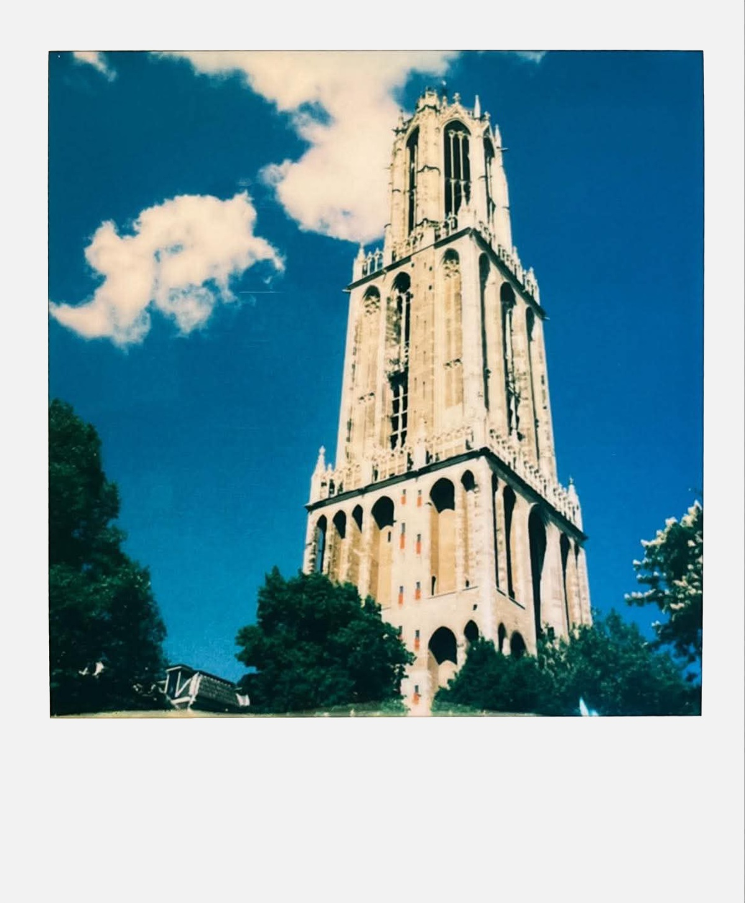
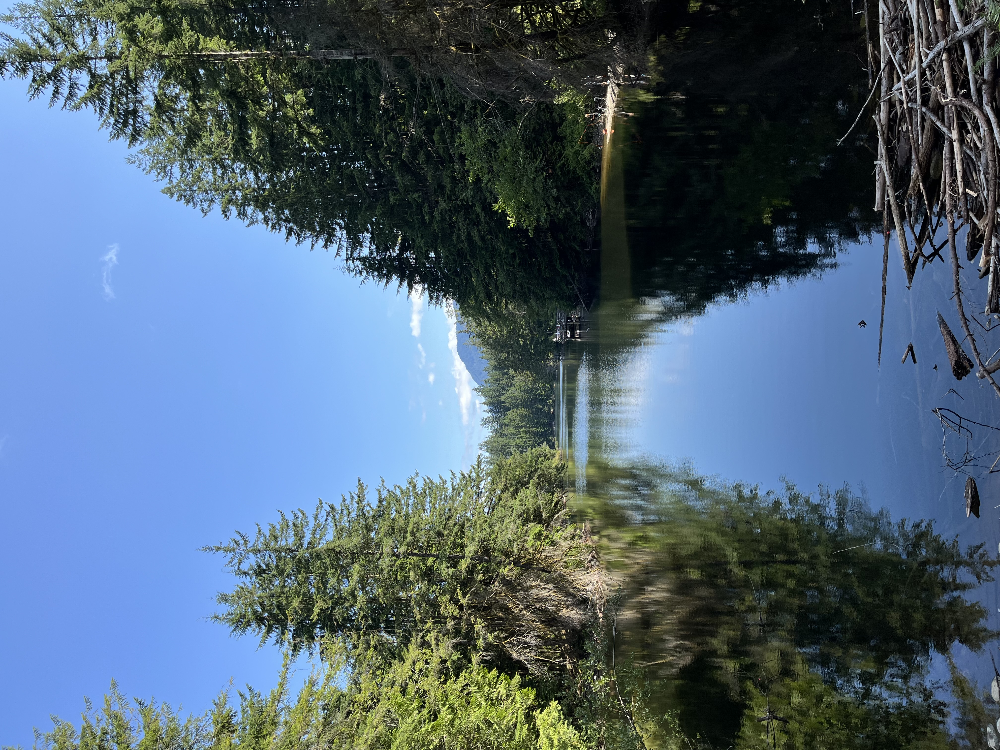

About
Good day! I'm Leslie, a web developer and recent Fanshawe College graduate. Born and raised in London (Ontario, Canada)
I love programming, learning languages, photography, 3D modelling, and connecting back-end data with my front-end design.

Skills
Projects
Working on it...
Tech
Languages
HTML / CSS / SCSS / JS / PHP / TS / SQL flavours
Frameworks
React / Tailwind / SvelteKit / Vite / Express.js
Tools
Figma / Photoshop / VSCode / Claude Code / Node.js (I know it's not a framework)
Education
Fanshawe College
General Arts & Science (GAP1) (2020) - GPA: 4.16, Dean's Honour Roll
Internet & Web development Applications (IWD2) (2023-2026) - GPA: 3.73

Chill Zone
I love learning languages. I am a bilingual native speaker of English & Hungarian, am conversational in Japanese, and have been interested in modern and ancient languages.
I fell in love with photography a few years ago and have now fallen in love with Polaroid photography (my wallet does not appreciate this)
I taught myself 3D modelling in Blender after getting into PS2 games and wanting to be a game developer when I was a kid. I made some PS2-themed projects that were super time-consuming, but gave me a deeper appreciation for the games I love.
If I'm not in Canada, I'm biking in the Netherlands. If I'm not in the Netherlands, I'm in Japan - also biking and hiking.
My favourite books are The Lord of the Rings & The Wool (Silo) book series. Highly recommend the Apple TV adaption.
Le fin